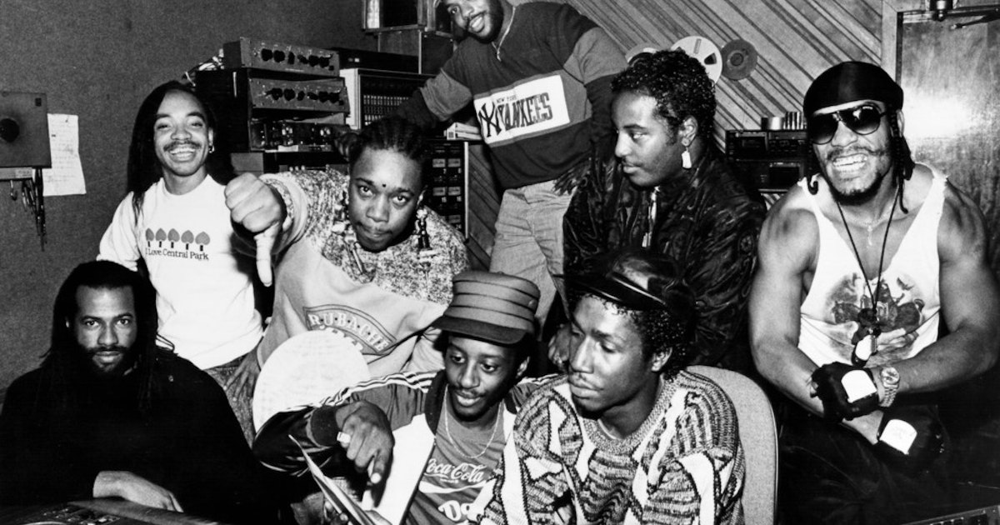
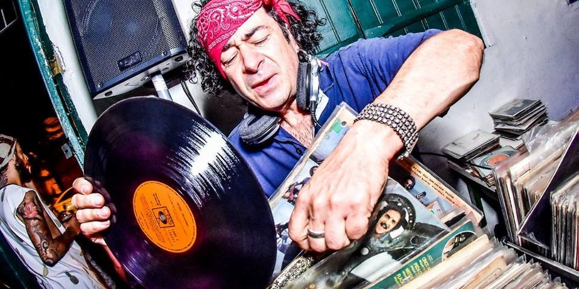
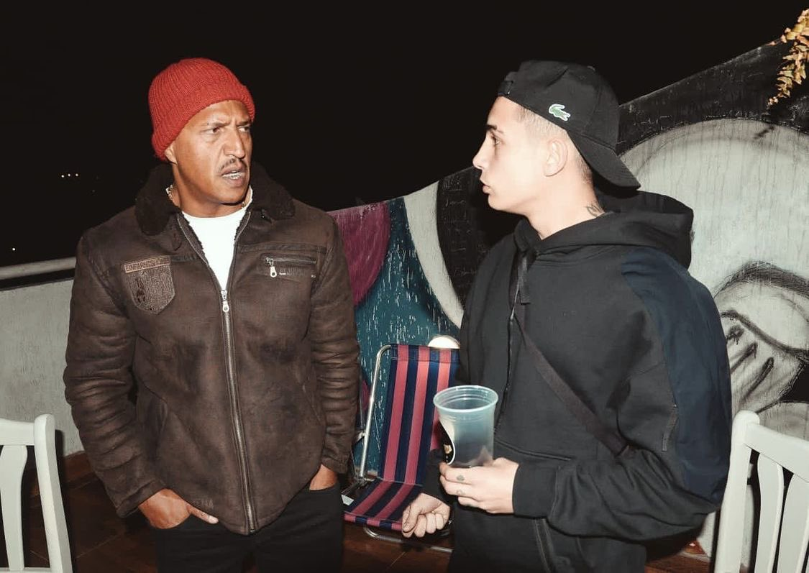
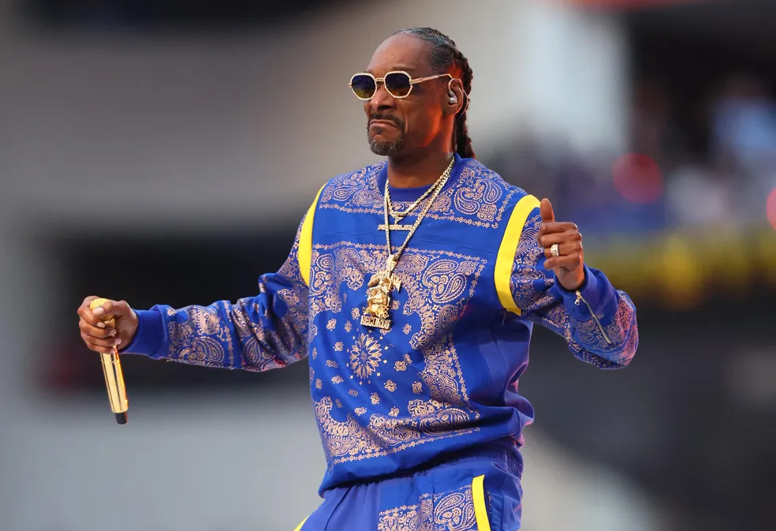
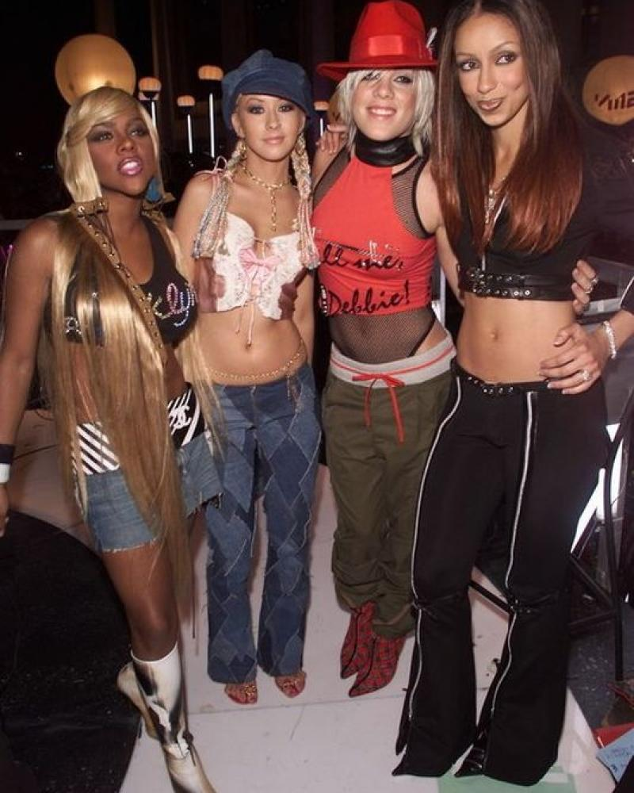
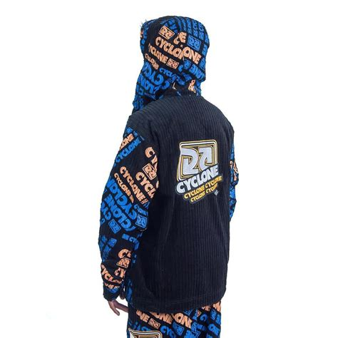
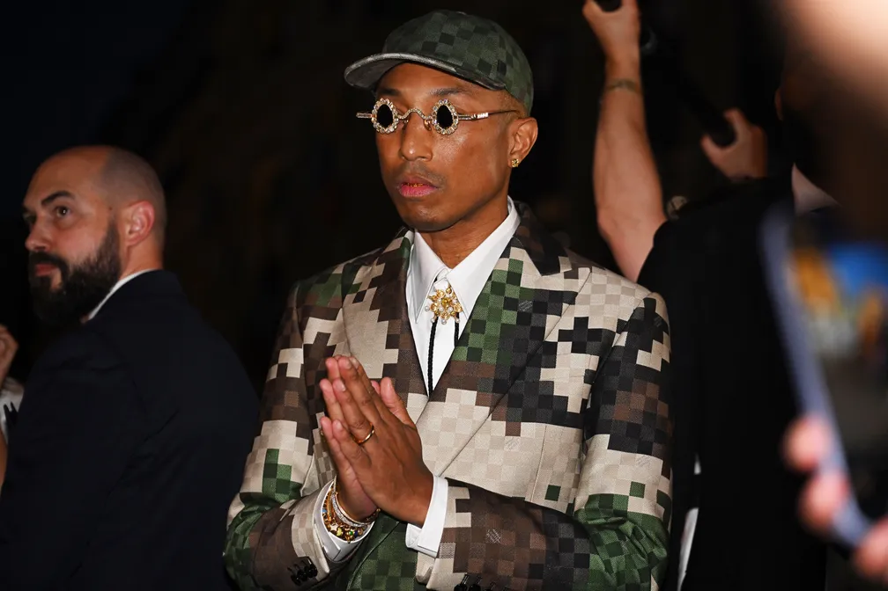
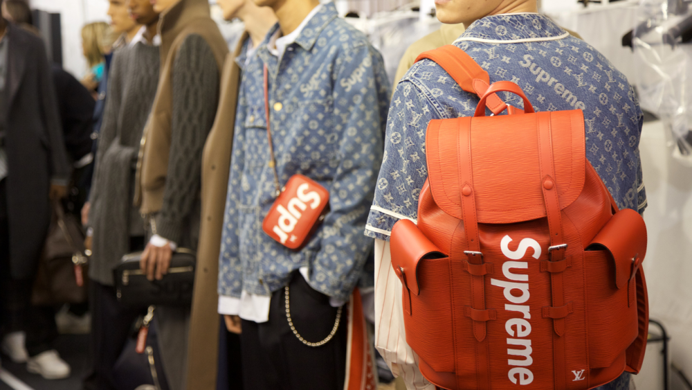

A palavra Rap é oriunda da mistura de duas palavras em inglês, rhythm and poetry, que significam ritmo e poesia respectivamente, o que traz ao rap um significado intenso, por ser uma mistura de gêneros fortes, com rimas poéticas falando sobre o contexto social, cultural e político. O rap tem uma batida rápida e a letra vem com mais informação e menos melodia, ou seja, pode-se dizer que é uma poesia cantada com batidas aceleradas e fortes. Usam do rap para contar as vivências de bairros menos afortunados das grandes cidades e falam das questões sociais às quais estão envolvidos de uma forma direta e sem rodeios, de uma forma que ninguém ousaria contar.
Consta que o estilo surgiu na Jamaica, por volta dos anos 60 e foi levado aos EUA uma década depois e se popularizou nos bairros de Nova York, mais especificamente no Bronx, entre jovens negros e de origem hispânica, fazendo com que o ritmo tomasse um grande impulso entre bairros de comunidade e um dos marcos musicais desse gênero, foi a música “The Message”, lançada em 1982 por Grandmaster Flash e The Furious Five.
O mesmo rapper de The Message, Grandmaster Flash, lançou o scratch, que consiste no efeito sonoro provocado pelo disco sendo arranhado pelo toca disco, tendo em vista que geralmente o rap consiste em uma “dupla”, sendo o DJ que fica responsável pelos efeitos sonoros, e o MC, que dita as letras. Se a letra possuir mais melodia, ela entra num subgênero do rap, denominado Hip Hop.
Na década de 80 muitos jovens norte-americanos se viam exauridos da disco music e começaram a criar mix de músicas, chamados de arranjos, o que contribuiu para que algumas músicas já existentes servissem de base para novos lançamentos, como por exemplo, as músicas de James Brown foram muito usadas para que novas músicas pudessem ser criadas. Uma vertente muito conhecida do rap é o freestyle, que significa estilo livre, ou seja, os rappers improvisam as letras na hora, sendo assim uma demonstração de criatividade e raciocínio, e é frequentemente usado em batalhas de rap. Um dos primeiros pioneiros de freestyle no Brasil foi o rapper Emicida, e no que se trata das batalhas de rap, a mais conhecida é a Batalha da Aldeia, criada em 2016 pelos rappers Bob13 e GZ, que ocorre em Barueri, São Paulo.
A partir daí, o rap começou a ser misturado com outros gêneros musicais, e alguns nomes conhecidos do Mangue Beat, oriundo de uma dessas misturas, são Chico Science e Nação Zumbi. Nos dias atuais o rap está bem inserido no cenário musical brasileiro, vencendo cada dia mais o preconceito e saindo da periferia para alcançar outros tipos de público, as Batalhas da Aldeia se tornaram cada vez mais famosas e hoje é possível fazer diversos festivais que alcançam gente do Brasil inteiro, como o Rep Festival, Cena, dentre outros. A essência do rap não foi perdida, muito pelo contrário, hoje mais que nunca os rappers tem orgulho de cantar suas vivências e querem ser ouvidos, querem ser enxergados pela sua arte.
Ambos os estilos musicais denunciam a vida difícil dos moradores da periferia nacional e internacional, mas foram pouco a pouco conquistando espaço e chegando aos ouvidos de pessoas que não estavam inseridas nesse meio. O rap e o funk no Brasil têm um peso muito grande na vida de muitos jovens, pois os mesmos utilizam da arte para sair da vida do crime, utilizam da visibilidade para tirar familiares e amigos da pobreza, como retratam em muitas das músicas desses estilos. O desejo de sair da vida precária e sem futuro serve de motivação, tal qual a vontade de ter aquilo que nunca puderam, como casas em bairros melhores, carros importados e outros artigos de luxo, como roupas de grife.
O streetwear, como o próprio nome já diz, é o estilo de rua, que surgiu nos anos 90, por conta da popularização do hip hop, então, o estilo sempre esteve presente, desde antes de vir ao Brasil, o estilo das pessoas que consumiam o rap era muito característico, os homens usavam camisetas e calças/bermudas largas, com cuecas à mostra e bandanas, cujas quais representavam suas gangues pelas cores, como por exemplo os Bloods e Crips, que foram os primeiros a utilizar das bandanas para se reconhecerem, a cor deles é o azul. Uma das grandes influências de estilo foi o Snoop Dogg, que em 2022 fez sua apresentação no intervalo da NFL com um conjunto de estampa da bandana azul, para representar sua gangue.
Já para o estilo feminino, eram usados muitos tank tops, e assim como os homens, elas usavam muitas calças largas de cintura baixa, bonés e muitos acessórios, como brincos de argolas grandes e body chains.
Esse estilo se estendeu ao Brasil, com certas adaptações por conta do clima, mas é possível ver muitas referências dos anos 80 e 90 nas roupas atuais, como por exemplo as camisetas mais largas e calças e shorts mais frouxos no copo, os chamados “kits”, que são peças que formam um conjunto da mesma estampa ou motivo.
Com o passar do tempo, o rap se tornou ainda mais influente na moda por conta de artistas como Kanye West e Pharrell Williams, o último hoje ocupa o cargo de diretor artístico da linha masculina da Louis Vuitton desde 2022.
A periferia invadiu o mercado de luxo há muito tempo, tal qual o streetwear, tendo sua primeira grande aparição com a collab da Louis Vuitton e Supreme, dois mundos que até então não se batiam, e depois disso virou sonho de consumo para ambos os lados.
O funk carioca "Sento no bico a glock", do DJ Gabriel do Borel, Mc Lucy & MC Rogê, compôs a playlist do desfile masculino da Louis Vuitton, na França, ocorreu durante a apresentação da cantora espanhola Rosalía 19/01/2023. primavera/verão mugler 2022 usou a música “na pepeka sem camisinha” do DJ Gabriel do Borel e Mc Lucy, no minuto 2:20 do filme. Anitta se apresentou no desfile da Dolce Gabbana 11/07/2023 e cantou músicas como Funk Rave, Bola Rebola e Desce pro Play TZ da Coronel desfilou pro Dendezeiro na SPFW 55 Pocah também desfilou pro Dendezeiro LAB fez um desfile no SPFW em 2016 e emicida disse “Hoje é o dia da favela invadir o São Paulo Fashion Week”
Xamã saiu na vogue e foi o primeiro rapper brasileiro a conseguir isso Rider contou com nomes como Ebony, MC Igu, Yunk Vino e Clau para participarem da campanha Flow Colors. Xamã desfilou para Walério Araújo SPFW 54 Tasha e Tracie saíram na capa da Elle, com direito à matéria especial sobre elas Capa filipe ret